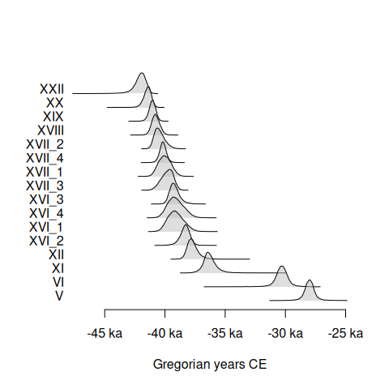
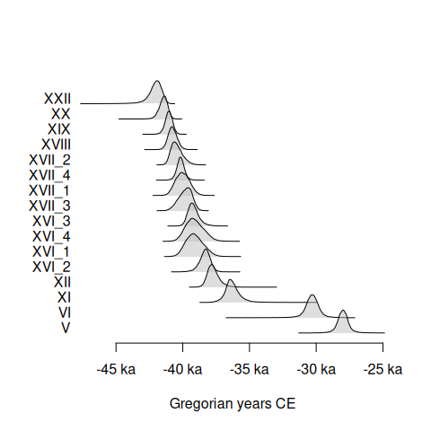

Overview
Statistical analysis of archaeological dates and groups of dates. ArchaeoPhases allows to post-process Markov Chain Monte Carlo (MCMC) simulations from ChronoModel (Lanos et al. 2020), Oxcal (Bronk Ramsey 2009) or BCal (Buck, Christen, and James 1999). This package provides functions for the study of rhythms of the long term from the posterior distribution of a series of dates (tempo and activity plot). It also allows the estimation and visualization of time ranges from the posterior distribution of groups of dates (e.g. duration, transition and hiatus between successive phases).
ArchaeoPhases v2.0 brings a comprehensive package rewrite, resulting in the renaming of nearly all functions. For more information, please refer to news(Version >= "2.0", package = "ArchaeoPhases").
To cite ArchaeoPhases in publications use:
Philippe A, Vibet M (2020). "Analysis of Archaeological Phases Using
the R Package ArchaeoPhases." _Journal of Statistical Software, Code
Snippets_, *93*(1). doi:10.18637/jss.v093.c01
<https://doi.org/10.18637/jss.v093.c01>.
Philippe A, Vibet M, Dye T, Frerebeau N (2023). _ArchaeoPhases:
Post-Processing of Markov Chain Monte Carlo Simulations for
Chronological Modelling_. Université de Nantes, Nantes, France.
doi:10.5281/zenodo.8087121 <https://doi.org/10.5281/zenodo.8087121>,
R package version 2.0,
<https://ArchaeoStat.github.io/ArchaeoPhases/>.Installation
You can install the released version of ArchaeoPhases from CRAN with:
install.packages("ArchaeoPhases")And the development version from GitHub with:
# install.packages("remotes")
remotes::install_github("ArchaeoStat/ArchaeoPhases")You can install the 1.x releases from the CRAN archives:
# install.packages("remotes")
remotes::install_version("ArchaeoPhases", version = "1.8")Usage
ArchaeoPhases v2.0 uses aion for internal date representation. Look at vignette("aion") before you start.
These examples use data available through the ArchaeoData package which is available in a separate repository. ArchaeoData provides MCMC outputs from ChronoModel, OxCal and BCal.
## Install data package
install.packages("ArchaeoData", repos = "https://archaeostat.r-universe.dev")
## Load package
library(ArchaeoPhases)Import a CSV file containing a sample from the posterior distribution:
## Read output from ChronoModel
path <- "chronomodel/ksarakil/"
## Events
path_event <- system.file(path, "Chain_all_Events.csv", package = "ArchaeoData")
(chrono_events <- read_chronomodel_events(path_event))
#> <EventsMCMC>
#> - Number of events: 16
#> - Number of MCMC samples: 30000
## Phases
path_phase <- system.file(path, "Chain_all_Phases.csv", package = "ArchaeoData")
(chrono_phases <- read_chronomodel_phases(path_phase))
#> <PhasesMCMC>
#> - Number of phases: 4
#> - Number of MCMC samples: 30000Analysis of a series of dates
## Plot the first event
plot(chrono_events[, 1], interval = "hdr")
## Plot all events
plot(chrono_events) 

## Tempo plot
tp <- tempo(chrono_events, level = 0.95)
plot(tp)
## Activity plot
ac <- activity(chrono_events)
plot(ac)
Analysis of a group of dates (phase)
bound <- boundaries(chrono_phases, level = 0.95)
as.data.frame(bound)
#> start end duration
#> EPI -28978.53 -26969.82 2009.709
#> UP -38570.37 -29368.75 9202.620
#> Ahmarian -42168.47 -37433.31 4736.161
#> IUP -43240.37 -41161.00 2080.371
## Plot all phases
plot(chrono_phases)